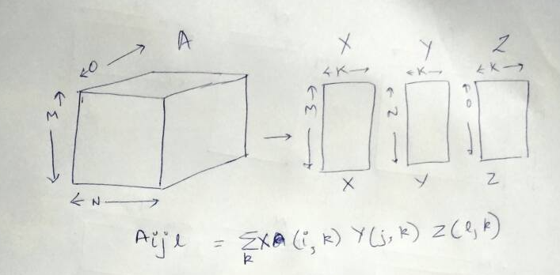
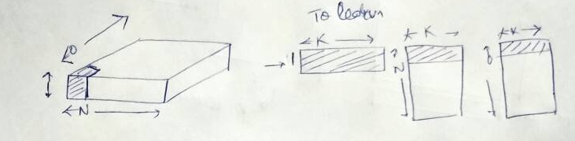

In a previous post, we had looked at predicting for users who weren't a part of the original matrix factorisation. In this post, we'll look at the same for 3-d tensors. In case you want to learn more about tensor factorisations, look at my earlier post.

General tensor factorisation for a 3d tensor A (M X N X O) would produce 3 factors- X (M X K), Y (N X K) and Z (O X K). The $A_{ijl}$ entry can be found as (Khatri product) :
$$ A_{ijl} = \sum_k{X_{ik}Y_{jk}Z_{lk}}$$
However, we'd assume that the $M^{th}$ entry isn't a part of this decomposition. So, how do we obtain the X factors correspondonding to $M^{th}$ entry? We learn the Y and Z factors from the tensor A (excluding the $M^{th}$ row entries). We assume the Y and Z learnt to be shared across the entries across rows of A (1 through M).

The above figure shows the latent factor for X ($X_{M}$) corresponding to the $M^{th}$ entry of X that we wish to learn. On the LHS, we see the matrix corresponding to $A_{M}$. The highlighted entry of $A_{M}$ is created by element-wise multiplication of $X_M, Y_0, Z_0$ and then summing. Thus, each of the N X O entries of $A_M$ are created by multiplying $X_M$ with a row from Y and a row from Z. In general,
$$A_{M, n, o} = \sum_k{X_{M, k} \times Y_{n, k} \times Z_{o, k}}$$
Now, to learn $X_M$, we plan to use least squares. For that, we need to reduce the problem into $\alpha x = \beta$ We do this as follows:
We can now write,
$$ \alpha X_M^T \approx \beta $$ Thus, X_M^T = Least Squares ($\alpha, \beta$)
Ofcourse, $\beta$ can have missing entries, which we mask out. Thus, we can write:
$X_M^T$ = Least Squares ($\alpha [Mask], \beta [Mask]$)
In case we're doing a non-negative tensor factorisation, we can instead learn $X_M^T$ as follows: $X_M^T$ = Non-negative Least Squares ($\alpha [Mask], \beta [Mask]$)
import tensorly
from tensorly.decomposition import parafac, non_negative_parafac
import numpy as np
M, N, O = 10, 4, 3 #user, movie, feature
t = np.arange(M*N*O).reshape(M, N, O).astype('float32')
t[0] #First entry
t_orig = t.copy() # creating a copy
t[-1,:,:][0, 0] = np.NAN
t[-1,:,:][2, 2] = np.NAN
t[-1,:,:]
K = 2
# Notice, we factorise a tensor with one less user. thus, t[:-1, :, :]
X, Y, Z = non_negative_parafac(t[:-1,:,:], rank=K)
X.shape, Y.shape, Z.shape
Y
Z
alpha = np.einsum('nk, ok -> nok', Y, Z).reshape((N*O, K))
print alpha
print "\nShape of alpha = ", alpha.shape
from scipy.optimize import nnls
beta = t[-1,:,:].reshape(N*O, 1)
mask = ~np.isnan(beta).flatten()
beta[mask].reshape(-1, 1)
X_M = nnls(alpha[mask], beta[mask].reshape(-1, ))[0].reshape((1, K))
X_M
X
It seems that the first column captures the increasing trend of values in the tensor
np.round(np.einsum('ir, jr, kr -> ijk', X_M, Y, Z))
t_orig[-1, :, :]
Not bad! We're exactly there!